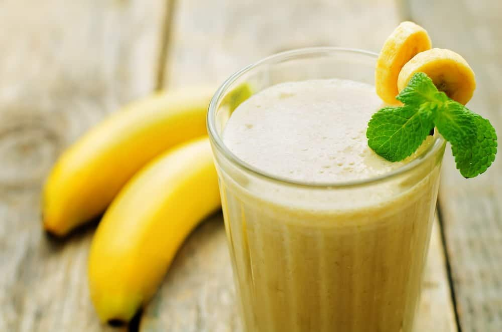

Banana Milkshake

Ingredients:
- 1 Banana
- 250 mL Milk
- 3 ice cubes
Method:
- Peel the banana and add it to a blender.
- Add the milk and ice cubes to the blender.
- Turn on the blender for 30 seconds.
- Drink!
Reviews:
-
Rima: Tasty and simple (I drank it even though I am not fond of
bananas)- 9/10
-
Soumi: Kinda bleh: tasted a little bland (maybe some sugar syrup might
do the trick)?- 6/10